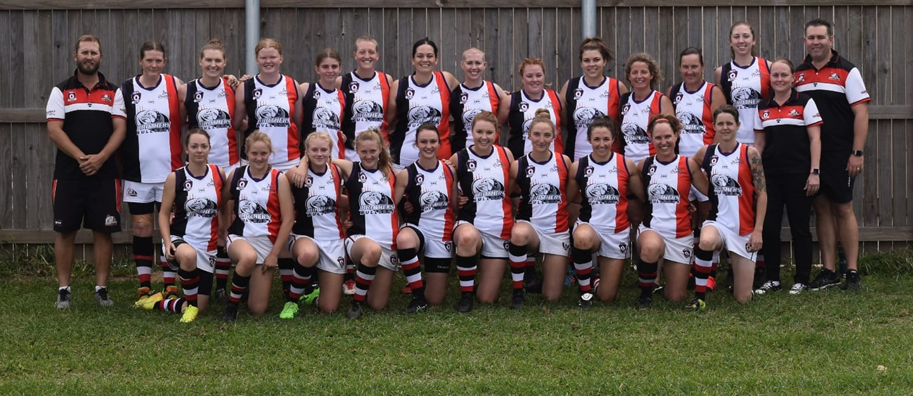

News
Draw / Results
Membership
Sponsorship
Gallery
Club Honours
Merchandise
Contact / Location
Draw and Results

2019 Wide Bay Senior's Draw
2019 Wide Bay Junior's Draw
2020 Wide Bay Women's Draw
SportsTG AFL Wide Bay